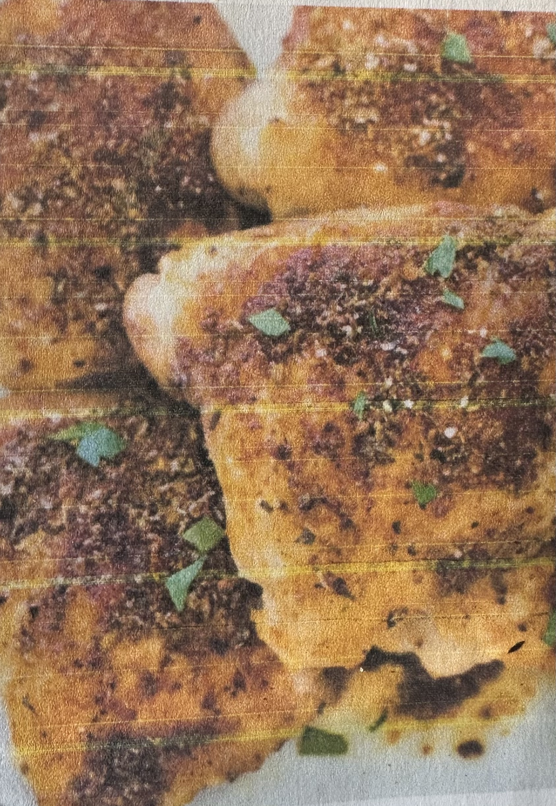

Baked Chicken Thighs

Easy to make, seasoned, baked chicken thighs
Mix a few spices, rub onto each thigh and pop into a preheated oven for 20 minutes and you have
a tasty chicken to accompany a meal of veggies and potentially a starch
Ingredients
Rub Ingredients
- 3 teaspoons dried Italian seasoning or dried oregano
- 2 teaspoons paprika
- 2 teaspoons garlic powder
- 2 teaspoons onion powder
- 1 teaspoon coarse Kosher salt or 1/2 teaspoon table salt
- 1/2 teaspoon pepper
Other Ingredients
- 2 pounds boneless,skinless chicken thighs (about 8 thighs)
- 2 tablespoons olive oil
Steps
- Preheat oven to 400 degrees. Line a rimmed baking sheet with foil or parchment paper
- In a small bowl, whisk together the rub inghredients until well-combined
- Pat the chicken thighs dry and place themon the baking sheet
- Rub both sides of thechicken with olive oil. Rub the spice mixture over the chicken,
rubbing it on both sides of the chicken. Arrange the chicken thighs smooth side up on the pan.
- Bake in the preheated oven,without moving or turning,until the internal temperature of the thickest
part of the chicken reaches at least 165 degrees. This will take about 20-25 minutes.
- Let the chicken rest 5 minutes before serving